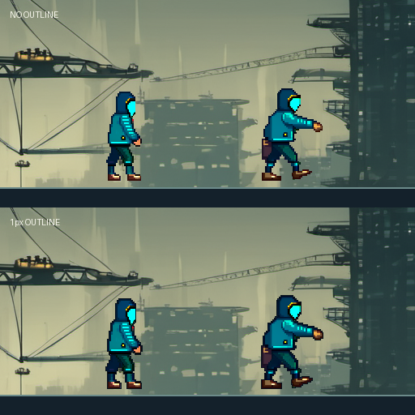

VISUAL QA / 2026.09.27
캐릭터 아트
화면 검수
128px 게임 표시 크기로 포즈와 외곽선을 직접 비교하세요. 아래 판정은 브라우저에만 저장되며, 승인 상태를 바꾸지 않습니다.
13확장 포즈 시안
128px기준 표시 크기
2외곽선 비교안
01 / RUNTIME CONTEXT
배경 위에서 보기
1:1 실제 픽셀 · 확대 표시 없음
기준 포즈: anticipation장비 형태 · 실루엣 · 배경 분리를 확인
원본 비교 · 외곽선 없음

원본 비교 · 1px 외곽선
03 / POSE BOARD
포즈 시안 한눈에
카드를 누르면 위 비교 화면으로 이동합니다. 동일한 정체성, 장비, 발 기준선이 유지되는지 보세요.
04 / YOUR REVIEW
내 검수 기록
각 항목을 직접 골라주세요. 선택 내용은 이 브라우저에 임시 저장됩니다.
SOURCE / EVIDENCE
이 화면의 근거
- 원본
- sanabi-prototype / pose_reference_pilot
- 실험
- SDXL + OpenPose + IP-Adapter Plus
- 레퍼런스 가중치
- 0.75 · 고정 시드 270927
- 배경
- 프로토타입 생성 배경 크롭
- 표시
- 128px 기준 · nearest-neighbor
- 상태
- 시안, 사람 승인 전